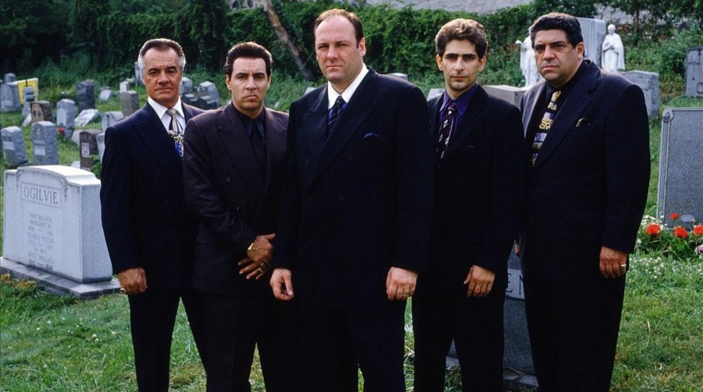

Introduccion
Los Soprano (en inglés The Sopranos) fue una serie de televisión estadounidense creada y producida por David Chase y HBO. La serie se estrenó en Estados Unidos el 10 de enero de 1999 por el canal de televisión por cable HBO, que la emitió ininterrumpidamente hasta su desenlace, el 10 de junio de 2007. La trama de la serie gira en torno al mafioso de Nueva Jersey Tony Soprano (James Gandolfini) y las dificultades que enfrenta tanto en su hogar como en la organización criminal que dirige. A su vez, la serie también se centra en la historia de los personajes cercanos a Tony, especialmente su esposa Carmela (Edie Falco) y su sobrino y protegido Christopher Moltisanti (Michael Imperioli).
El rodaje de la serie se hizo entre los Silvercup Studios de Nueva York y diversos escenarios del estado de Nueva Jersey. Los productores ejecutivos a lo largo de su emisión fueron Chase, Brad Grey, Robin Green, Mitchell Burgess, Ilene S. Landress, Terence Winter y Matthew Weiner.
Temporadas
Los soprano consta de 6 temporadas, que fueron emitidas entre el 10 de Enero de 1999 y el 10 de Junio de 2007.
| Temporada | Episodios | Emisión original | |
|---|---|---|---|
| Primera emisión | Última emisión | ||
| 1 | 13 | 10 de enero de 1999 | 4 de abril de 1999 |
| 2 | 13 | 16 de enero de 2000 | 9 de abril de 2000 |
| 3 | 13 | 4 de marzo de 2001 | 20 de mayo de 2001 |
| 4 | 13 | 15 de septiembre de 2002 | 8 de diciembre de 2002 |
| 5 | 13 | 7 de marzo de 2004 | 6 de junio de 2004 |
| 6 | 21 | 12 de marzo de 2006 | 10 de junio de 2007 |
Imagen de promocion de la serie
